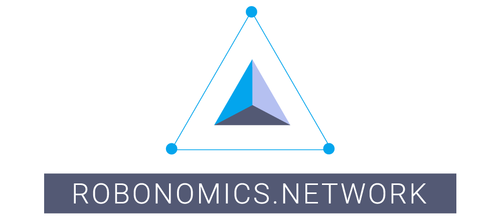
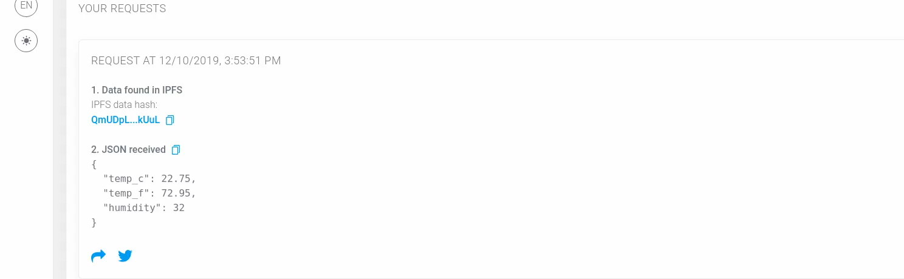

Getting Started

Web3 Framework for smart cities and industry 4.0 app developers
The idea of the network is to connect a particular service and a Dapp user interface. The following chart describes what place Robonmics takes in the scenario.

Try it out yourself here!
What the documentation contains
I'm interested in using Robonomics services
Take a look at the Robonomics Dapp. Get familiar with the statistic, average miner reward etc. Try out existing services
I'm a Dapp developer
There are Robonomics-js library and dapp template
I'm a robotics engineer
Links:
- Install AIRA
- Messages
- FAQ
- etc...
Sensor Demo
Let's start from a quick example of what Robonomics is able to do within 5 minutes.
Requirements: Metamask extension
Open sensor demo website and follow instructions below
1. Open the Dapp
You see the next picture in case you don't have MetaMask extension. Go to the link provided above and install one

2. Allow connection to the extension

3. Press "Request current values"

4. Sign a message. No token or ether are needed

5. Wait until the agent collects the data and sends it back
6. Wait until the Dapp downloads the result file from IPFS
7. Look at the data

Just now you have broadcasted a demand message and got a result from an autonomous agent! The result file is stored in IPFS, the result message is signed with the agent's private key.